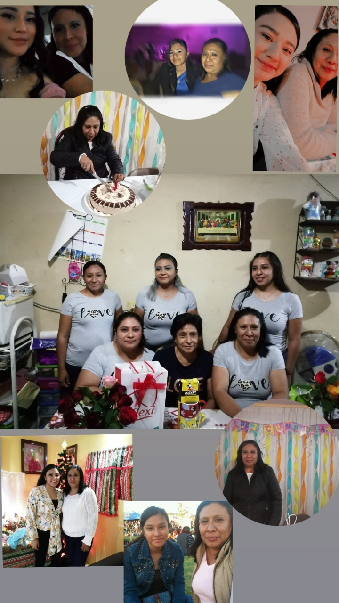

Día de las madres
Mamá, No hay palabras suficientes para describir lo mucho que agradezco todo lo que has hecho por mi, el estar cuandp te necesito, cuando enfermo, cuando me defiendes y me haces sentir bien conmigo misma, gracias por seguir creyendo en mi.
A lo largo de mi corta vida me has demostrado que eres la mujer mas fuerte ya que has pasado por tantas cosas y no te das por vencida, te admiro mucho,a ti y a papá por todo lo poco o mucho que me han dado .
Quiero pedirte disculpas por no ser la hija que esperabas tener pero me estoy esforzando mucho para no desepciopnarte y te sientas orgullosa de mi y que sientas que tus esfuerzos por darme todo valieron la pena, infinitas gracias por tato y perdon por tan poco. Te quiero con todo mi corazon aunque no siempre te lo digo.
ERES LA MEJOR TE AMO MAMI
